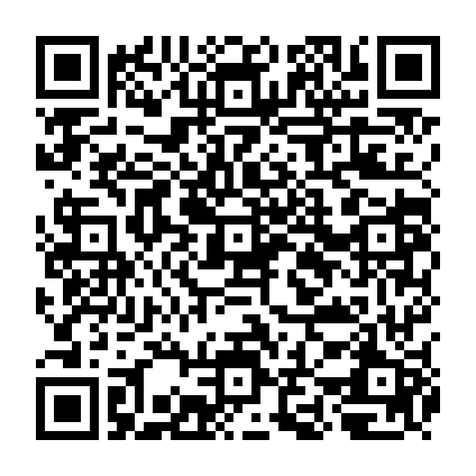

벽란도는 고려 시대에 여러 나라의 상인이 모여 물건을 사고팔던 국제 무역항이었습니다. 수도 개경과도 가깝고 강물이 깊어 큰 배가 드나들기에도 좋았습니다. 덕분에 벽란도는 무역의 중심지로 발전할 수 있었습니다.
ONCUVATE · 꼼꼼 읽기역사 속 교류 01
01 / 본문 · 어휘 학습
벽란도,
세계를 만난 항구
물건과 함께 지식도 오갔어요.
1QR 코드를 찍어 본문을 들어요.
2들으면서 뜻이 이어지는 말 사이에 /를 표시해요.
3표시한 곳에서 잠깐 쉬며 스스로 다시 읽어요.
예: 우리 반은 / 오늘 도서관에 갔습니다. 웹에서는 말 사이의 ·를 누르면 /가 생겨요.
본문 듣기고려는 송, 일본, 동남아시아 여러 나라와 교류했습니다. 아라비아 상인들도 송에서 고려에 관한 소문을 듣고 벽란도를 찾아왔습니다. 여러 나라와 활발하게 교류하면서 고려의 이름도 널리 알려졌습니다. ‘고려’라는 이름은 오늘날 우리나라를 가리키는 ‘코리아’의 바탕이 되었다고 전해집니다.
고려는 송에 인삼, 금, 은, 삼베, 모시, 종이, 화문석, 부채, 나전 칠기 등을 수출했습니다. 그중에서도 인삼과 종이는 품질이 뛰어나기로 이름이 높았습니다.
반대로 송에서는 약재, 비단, 차, 서적, 악기 등을 수입했습니다. 송에서 들여온 서적과 의학 지식은 고려의 학문 발전에도 도움이 되었습니다. 이처럼 벽란도는 물건뿐 아니라 사람과 지식, 문화가 함께 오가는 국제 교류의 창구였습니다.
낱말 돋보기
한자로 뜻을 풀어요
무역 貿易
貿 무역할 무 · 易 바꿀 역
나라 사이에 물건을 사고파는 일.
교류 交流
交 사귈 교 · 流 흐를 류
사람·물건·지식 등이 서로 오가는 일.
수출 輸出
輸 보낼 수 · 出 날 출
우리나라 물건을 다른 나라에 파는 일.
고려 → 송 인삼·종이·나전칠기
수입 輸入
輸 보낼 수 · 入 들 입
다른 나라 물건을 사들여오는 일.
고려 ← 송 비단·약재·서적
자개는 장식 재료, 나전칠기는 자개로 꾸민 옻칠 공예품이에요.
ONCUVATE · 꼼꼼 읽기역사 속 교류 01
02 / 빈칸 채우기 · 틀린 곳 고치기
작은 말까지 꼼꼼하게
1쪽 본문을 보며 풀어도 좋아요. 쓴 뒤에는 문장을 끝까지 다시 읽어요.
활동 1
본문에 나온 말로 빈칸을 채우세요.
보기 학문 · 수입 · 무역항 · 수출 · 개경
활동 2
틀린 곳을 찾아 바르게 고치세요.
밑줄 친 두 말 중 본문과 다른 말을 고르고, 바른 말을 쓰세요.
ONCUVATE · 꼼꼼 읽기역사 속 교류 01
03 / 읽기 이해 질문
그림과 글을 함께 살펴요
본문을 다시 보며 확인해도 좋아요.
ONCUVATE · 꼼꼼 읽기역사 속 교류 01
04 / 뜻 보고 낱말 찾기
설명 속 낱말을 찾아요
설명을 읽고, 알맞은 낱말 8개를 글자판에서 찾아 동그라미 치세요.
낱말은 가로 → 또는 세로 ↓로 이어져 있어요. 읽었던 내용을 떠올려 보세요.
1
여러 나라 상인이 모여 물건을 사고팔던 고려의 항구.□□□
2
물건을 사고파는 일을 하는 사람.□□
3
우리나라 물건을 다른 나라에 파는 일.□□
4
다른 나라의 물건을 사들여오는 일.□□
5
사람이나 물건, 지식이 서로 오가는 일.□□
6
송에서 들여온 물건으로, 글이나 지식을 담은 책.□□
7
벽란도와 가까웠던 고려의 수도.□□
8
고려가 수출한 약초로, 종이와 함께 품질이 좋기로 이름난 물건.□□
낱말의 첫 글자를 누른 뒤, 마지막 글자를 누르세요.
0 / 8